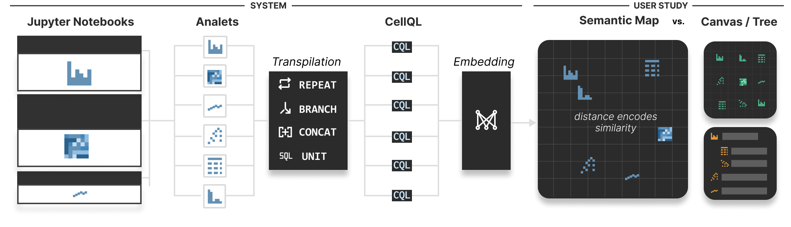
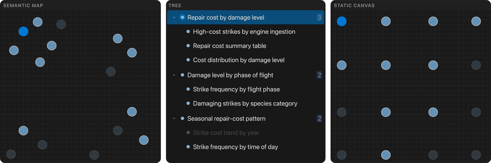

Where have I been?
Keep earlier analyses in view as an investigation grows and branches.
UIST 2026 · Research project
What if your notebook had a map of your analysis?
An investigation can branch into dozens of questions, charts, and transformations. Ptolemy arranges analytical steps by what they do, helping you see where you have been and how your next question relates.
MIT CSAIL · Tableau Research

01 / The idea
Keep earlier analyses in view as an investigation grows and branches.
Find the neighborhood around a question and compare it with related analytical steps.
Use the broader analysis space to consider possible directions for exploration.
Each step becomes an analet. CellQL describes its effective data view—columns, filters, transformations, and aggregations—so comparison can go beyond code syntax. Embeddings and a 2D projection turn these descriptions into a map, coordinated with a tree of the investigation.
02 / Try the idea
Imagine exploring wildlife strikes on aircraft. Select a point, inspect its question and example code, then mark it reviewed to trace your path.
Illustrative walkthrough. This is a small, authored example inspired by the paper’s scenario. Positions are schematic. It does not run Python, generate analyses, or display computed results from the research system.
Select any question to begin.
Example Python · shown, not executed
Selections you mark reviewed appear here.
In Ptolemy, nearby points suggest similar analyses. The map’s axes have no fixed meaning, and empty space is not proof of a missing analysis.
03 / What we learned
In a study with 12 participants, we compared a semantic map, a tree, and a static canvas. Participants favored maps for understanding the broader analysis space and recognizing similar analyses. Ordered layouts made immediate next steps easier to choose.

The static canvas produced the widest measured coverage in these short sessions. A semantic overview can support comparison while adding decision effort. The design opportunity is to pair that overview with clear cues for the next action.
This was a small comparative study with fixed candidates; live insertion and Bearings were disabled. The findings do not establish that maps make analysis universally faster or more complete.
04 / Take it further
@inproceedings{wootton2026ptolemy,
author = {Wootton, Dylan and Bromley, Denny and Setlur, Vidya},
title = {Ptolemy: A Semantic Map of Exploratory Data Analysis},
booktitle = {Proceedings of the 39th Annual ACM Symposium on
User Interface Software and Technology},
year = {2026},
doi = {10.1145/3830398.3830537}
}